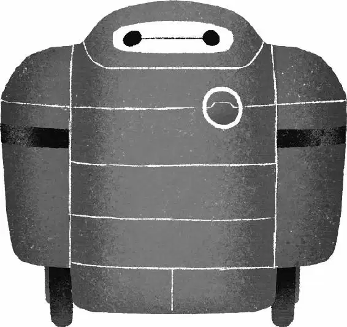

Tadashi took Hiro to his workstation. He rooted through a drawer and held up a roll of duct tape. Hiro sighed. “Hate to break it to you, bro— already been invented.”
Suddenly, Tadashi slapped a piece of the tape on Hiro’s arm. “Hey! What’s your deal?” Hiro asked. Tadashi pointed to a small red suitcase on the ground and yanked the tape off Hiro’s arm.
“Owwww!” Hiro yelled.
A loud BEEP filled the room. The suitcase began to hum, and lights on it blinked to life. The top opened and a white vinyl form began to rise. When it was fully inflated, a huge, puffy figure stepped out of the suitcase.
“Hello, I am Baymax, your personal health-care companion,” it said.
“This is what I’ve been working on,” Tadashi said, gesturing at the robot.
Baymax turned to Hiro. “I was alerted to the need for medical attention when you said ‘Ow.’ What seems to be the trouble?”
Hiro rubbed his arm and snapped, “Sibling abuse.”
“I will scan you now,” Baymax said. “Scan complete. You have a small epidermal abrasion on your forearm.”
“You’ve done some serious coding on this thing, huh?” Hiro asked Tadashi. Even though Hiro was still annoyed at his brother, he was also impressed.
Tadashi walked over to Baymax and removed a chip from his access port. “I programmed him with more than ten thousand medical procedures and a caregiving interface that makes Baymax... Baymax.”
“I suggest an antibacterial spray,” Baymax stated.
Tadashi slid the chip back in. Hiro was impressed. “Vinyl?” he asked.
Tadashi smiled. “I was going for a nonthreatening, huggable kind of thing.”
“Looks like a walking marshmallow.” Hiro said, turning to Baymax. “No offense.”
“I am a robot,” Baymax said as Hiro poked and prodded him. “I cannot be offended.”
Hiro waved his hands in front of Baymax’s eyes. “Hyperspectral cameras?” he asked before pushing his face into Baymax’s stomach. “Titanium skeleton?”
“Carbon-fiber,” Tadashi responded. “He can lift five hundred pounds. He’s gonna help a lot of people.”
Baymax sprayed Hiro’s arm with a disinfectant, then handed him a lollipop. Hiro tasted it and said, “Sugar-free? Bleh.”
“I cannot deactivate until you say you are satisfied with your care.”
“Well, then I am satisfied with my care,” Hiro said. As Baymax deflated and folded neatly back into his red suitcase, a distinguished-looking man with graying hair approached them. It was Professor Callaghan.
“Burning the midnight oil, Mr. Hamada?” the professor asked. Then he looked at Hiro. “You must be Tadashi’s brother. I’ve heard a lot about you. Bot-fighter, right?”
Hiro took his bot out of his pocket and fiddled with it.
Professor Callaghan reached for the bot, asking, “May I?”
Hiro handed it over, and Professor Callaghan studied it for a moment, then smiled. “Magnetic bearing servos—”
“Pretty sick, huh?” Hiro interrupted. “Want to see how I put them together?”
“Hey, genius,” Tadashi said. “He invented them.” Hiro’s eyes widened and his jaw dropped. “You invented ... You’re Robert Callaghan? Like, as in Callaghan’s Law of Robotics?”
Professor Callaghan smiled. “That’s right.” He handed Hiro back his robot. “Have you ever thought about applying here?”
Tadashi said quickly, “Oh, I don’t know. He’s pretty serious about his career in bot-fighting.” Hiro shrugged. “Well, kind of serious.”
“I can see why. With your bot, winning must come easy. And if you like things easy, my program isn’t for you. We push the boundaries of robotics here.” The professor put a hand on Tadashi’s shoulder. “My students go on to shape the future.”
Tadashi began to steer Hiro out the door. “Nice to meet you, Hiro,” Callaghan called to him. “Good luck with the bot fights.”
Hiro’s mind was racing. He wanted to stay and push the boundaries of robotics, too. When they were outside, Tadashi revved up the scooter.
“You getting on?” Tadashi asked.
Hiro started pacing back and forth. “If I don’t go to this nerd school, I’m going to lose my mind. How do I get in?” he asked. Tadashi smiled, happy that Hiro wanted to attend San Fransokyo Tech. Tadashi’s not-so-subtle plan had worked.
